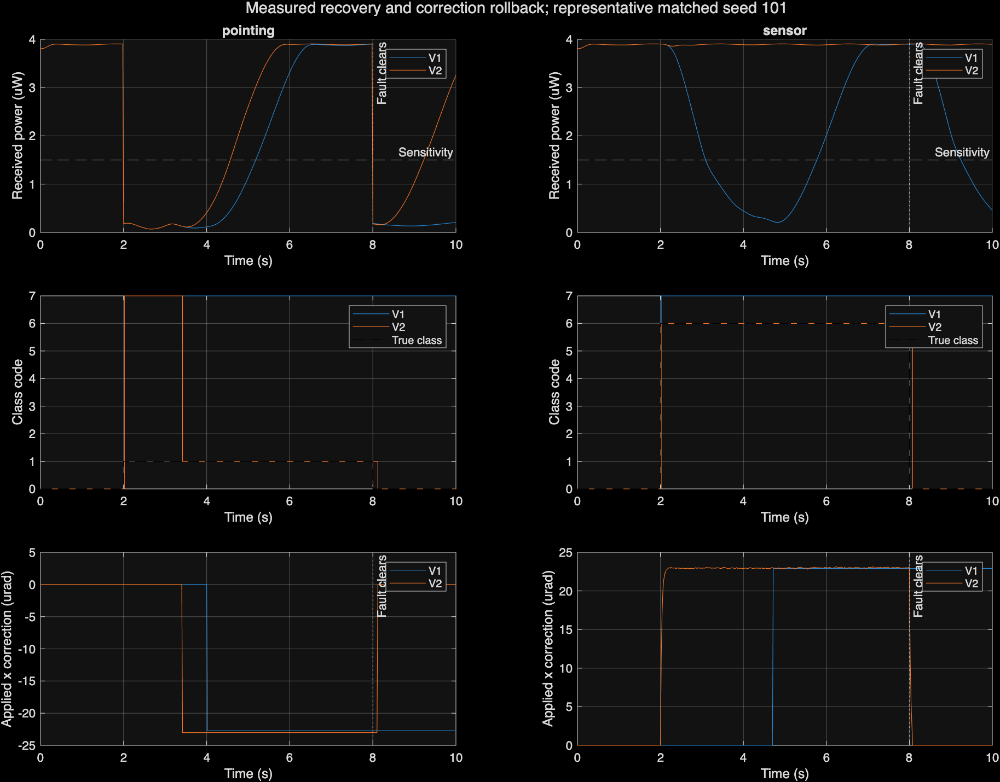
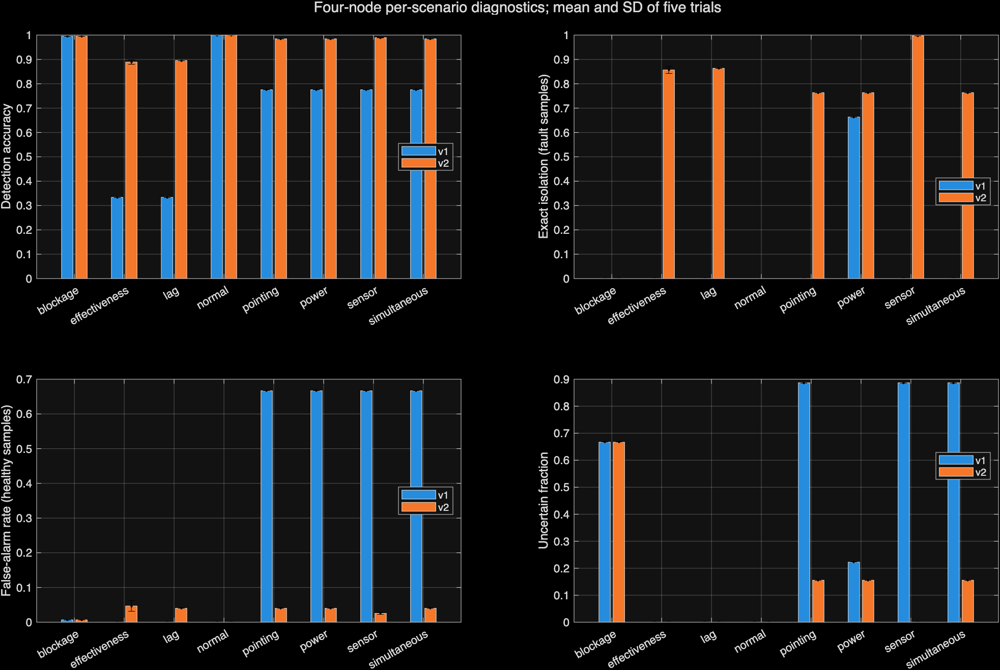
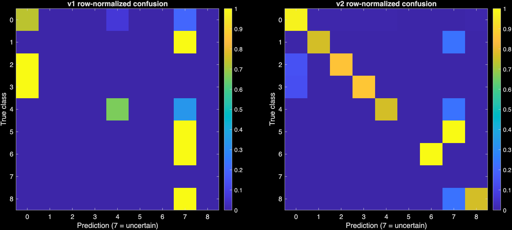
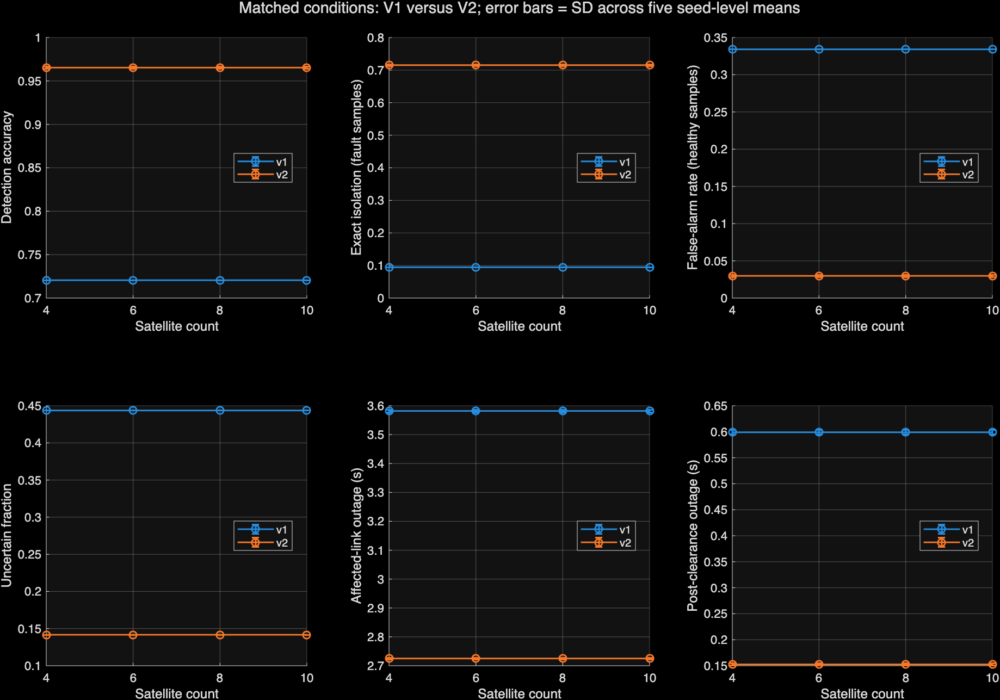

Active fault diagnosis & verified recovery for satellite laser links
A supervisor that watches each optical crosslink, works out what broke, applies a correction only when it can actually restore service, and takes the correction back once the fault clears. This site compares the original supervisor (V1) with the revised one (V2) across 320 matched Simulink simulations.
Four-satellite network, mean of five seed-level means. Values are identical at 6, 8 and 10 satellites because every size uses the same paired fault signals on edge 1.
One laser link, nine possible states
Each satellite carries an optical terminal that must hold its beam on a neighbour to within micro-radians. The Simulink model integrates every terminal's pointing dynamics continuously, routes traffic over the network, and injects faults on edge 1 between 2 s and 8 s of a 10 s run.
A link carries data only while received power stays above the receiver sensitivity of 1.5 µW. Perfectly aligned, the link delivers about 3.906 µW. Pure power loss leaves 0.703 µW and combined offset-plus-power loss leaves 1.367 µW, so no amount of re-pointing can restore those two cases.
The diagnosis runs on 450 evaluation samples per trial (1 s to 10 s at 20 ms). A fault trial has 300 fault samples and 150 healthy ones.
| Code | Fault class | Scenario |
|---|---|---|
| 0 | Healthy | normal |
| 1 | Boresight offset | pointing |
| 2 | Actuator gain loss | effectiveness |
| 3 | Actuator lag | lag |
| 4 | Optical power loss | power |
| 5 | Blockage | blockage |
| 6 | Sensor bias | sensor |
| 7 | Uncertain (no unique class) | — |
| 8 | Combined offset + power | simultaneous |
Why V1 could not isolate faults, and how V2 does
V1 limitations found in the audit
- Its optical fit could only ever name power loss (class 4); pointing, actuator, sensor and combined faults had no unique output.
- The actuator threshold scaled with maximum torque, far above the real excitation, so actuator faults were missed.
- One optical scan was latched for the rest of the run, ignoring later evidence.
- It applied pointing offsets even when the best possible aligned power could not reach sensitivity.
V2 supervisor
- Separates sensor bias from boresight error by comparing the encoder angle with the integrated, independently measured angular rate.
- Fits actuator gain and time constant from delivered-torque response, with rank and residual checks.
- Uses short, bounded optical probes only when the power model calls for discrimination.
- Keeps predicting received power. When measurements contradict the fit, it drops the correction and re-verifies the link.
- Skips any correction that cannot sustain service and reroutes traffic instead.
The plant, topology, fault schedule, seeds, receiver sensitivity, actuator limits and the original metric code are unchanged. Only the supervisor and its logging differ, in separately saved V2 model copies.
Original metrics, original denominators
Per-run metrics averaged within each seed, then mean ± sample SD across seeds 101, 202, 303, 404 and 505. Uncertain diagnoses count as detections but never as correct isolations.
Where the gains come from
Network-level service from 4 to 10 satellites
Diagnosis is identical at every size because the faulted edge sees the same paired signals. Network-average availability and route latency still depend on topology, and larger meshes have more alternate paths.
Fewer recoveries, because fewer outages
A run counts toward recovery only if the link actually went down, and it succeeds only with 0.5 s of sustained availability before the fault clears. Preventing an outage removes the run from the denominator. It is not counted as a recovery.
Shifted fault times and higher sensor noise
24 paired trials with fault onsets moved to 2.7–6.7 s, angle noise raised to 0.2 µrad, seeds 707 and 808, on 4 and 10 satellites with pointing, sensor and combined faults. The supervisor never sees the clearance time.
Straight from MATLAB
Generated by plot_v2_comparison from the latest batch. Select a figure to open it full size.




What these results do not show
- Blockage stays unresolved. Zero received power looks the same as a dead transmitter or very deep attenuation, so V2 reports "uncertain" rather than forcing class 5.
- Sensor-bias detection depends on an independent rate gyro. A constant bias present from the start cannot be separated without calibration.
- False alarms in healthy windows rose for actuator faults: from 0% to 4.7% for gain loss and from 0% to 4.0% for lag.
- Diagnosis takes longer: about 0.25 s versus 0.02 s for V1.
- Optical probes cost a little service and control effort. They are bounded but not optimal experiments or a formal safety guarantee.
- Only five main seeds and two stress seeds. The SDs are across trials, not confidence intervals.
- The model assumes fixed topology, ideal torque telemetry, a threshold receiver and fluid traffic.
- These are simulation results. They do not establish hardware reliability.
Rerun it in MATLAB
Requires MATLAB R2026a with Simulink. From the project folder:
start_v2 % opens the 4-satellite V2 model test_v2 % nine revision tests folder = run_v2_suite; % new 320-trial batch plot_v2_comparison(folder)
Reproduced